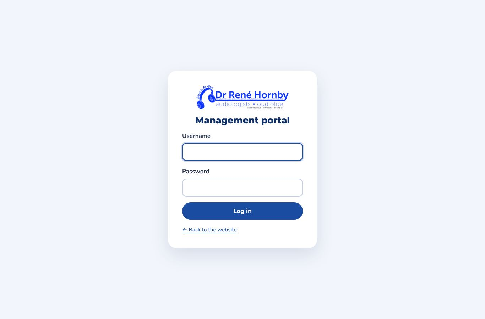
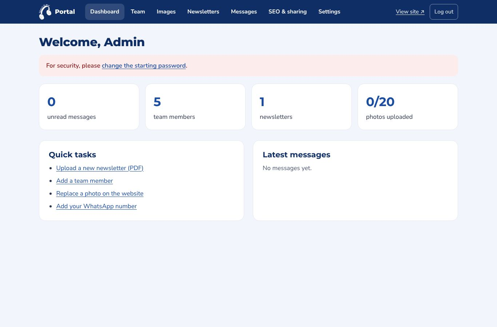
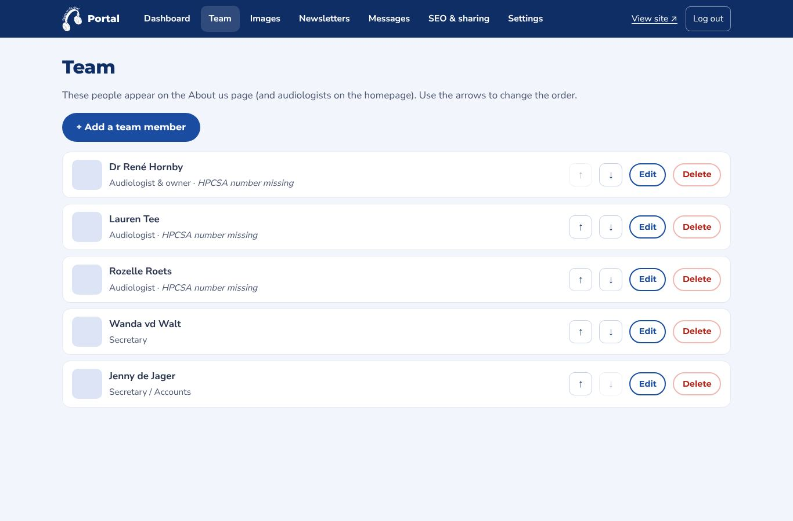
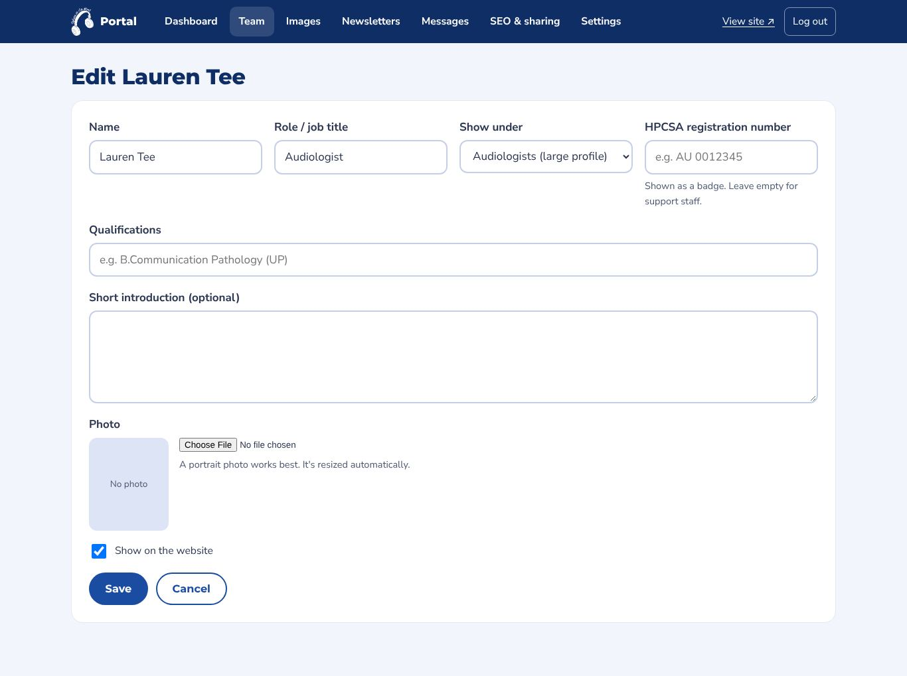
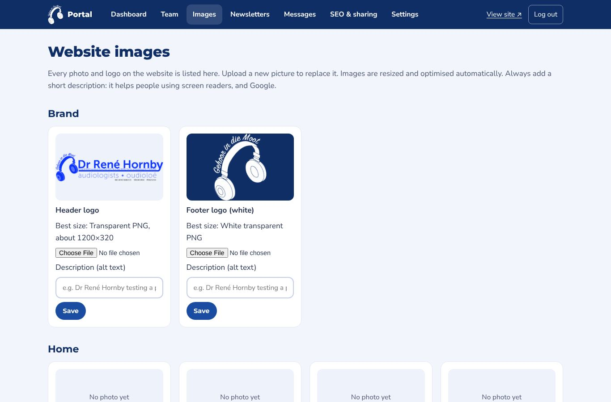
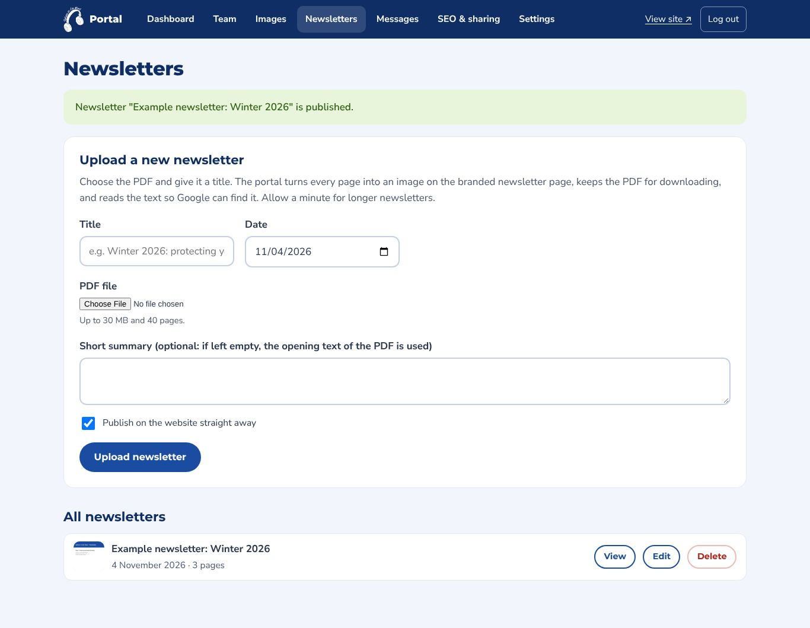
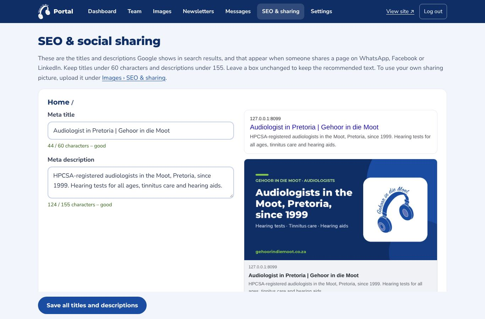
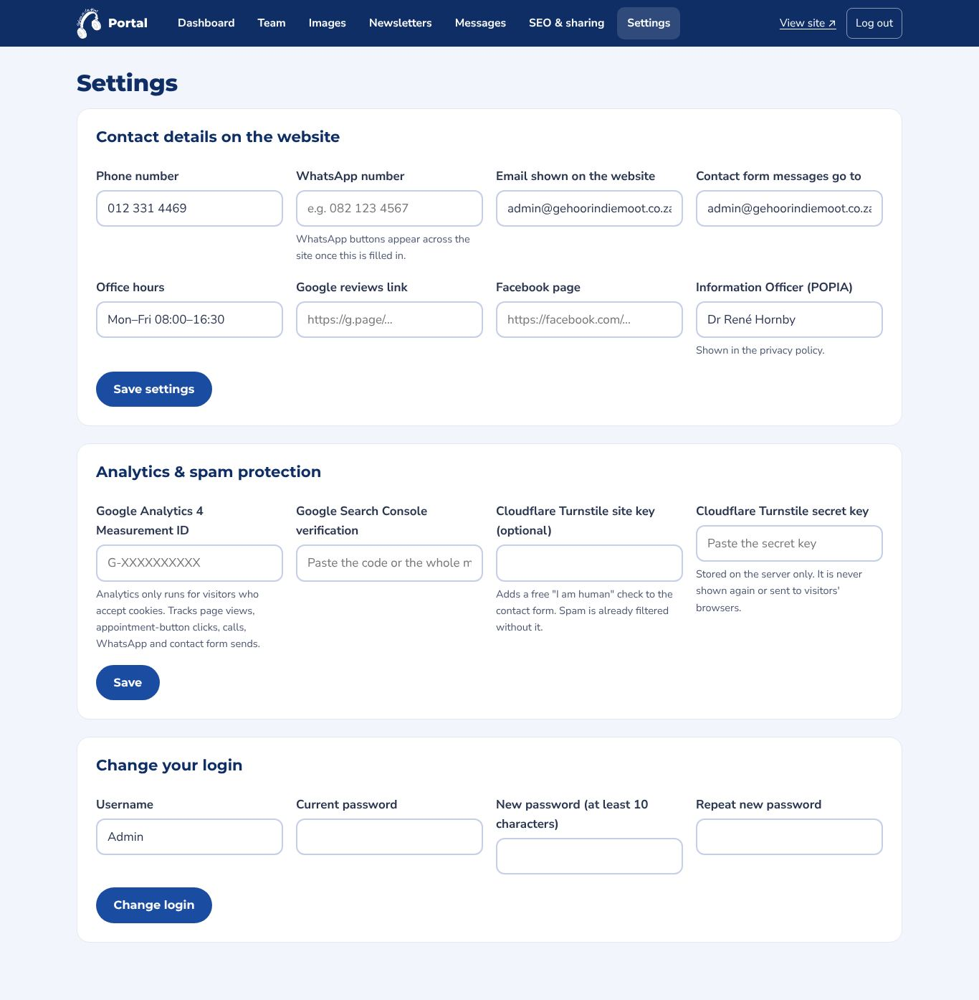

Built into the website
Click the © at the bottom of any page and log in. From there you manage the team, every photo, the newsletters and the messages, with nothing else to install.
The password is stored scrambled (hashed). After 5 wrong attempts, logins are paused for 15 minutes, and you're logged out after 30 minutes of inactivity.

Unread messages, the team, newsletters and photos at a glance, plus quick links to common tasks.

Add, edit, hide, reorder or remove people. Upload a photo and add qualifications and HPCSA numbers. Changes show straight away on About us and the homepage.


Every photo and logo on the site, grouped by page, including the "Member of" logos. Upload a replacement and add a description. Images are resized and optimised automatically.

Upload a PDF and give it a title. Every page becomes an image on the branded newsletter page, the PDF stays available to download, and the text is indexed for Google. See the example.

Edit the Google title and description of every page, with live character counters and a preview of the Google result and of the card shown when someone shares the page on WhatsApp or Facebook.

Contact details, the Information Officer, Google Analytics and Search Console, optional Cloudflare Turnstile spam check, and your login. Secret keys are stored on the server and never shown again.
